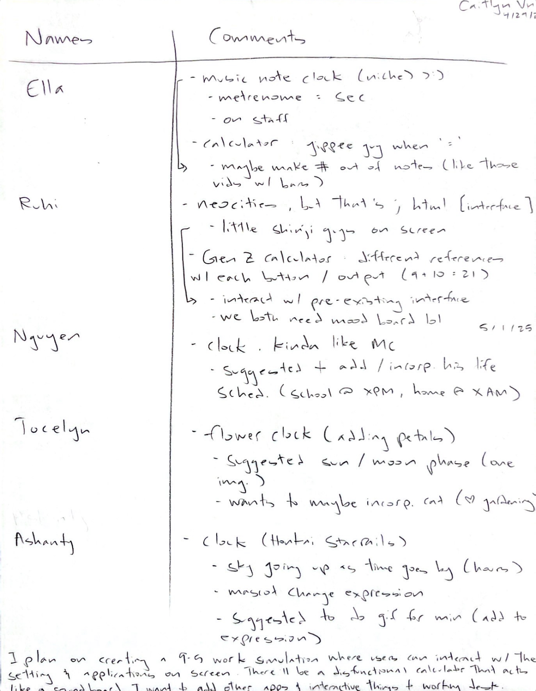
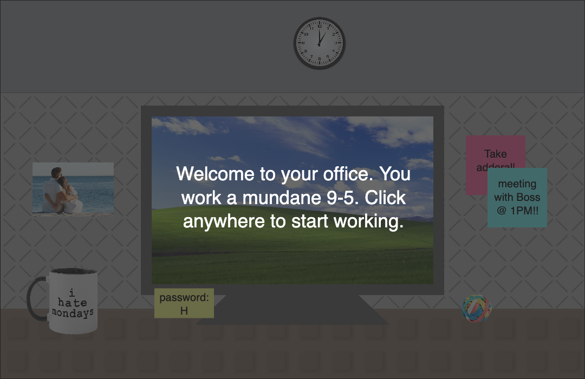

Project 4: The Final
Project 4: The Final
Exercise 5: The P5 Libraries
We're approaching the end of the semester, and were given two options for our final project: to create a digital visualization or interface mashup. I decided for the latter, and was allowed to use one of my early phases for Exercise 5. I mainly explored the TouchGui library in order to create a calculator. Other libraries included are Sounds and ScreenManager libraries. I originally had many ambitions for the calculator such as entering a certain combination of numbers would output a unique sound, though wasn't able to achieve it. The command song.isPlaying() is used twice to control the office background noises. Within the calculator scene, more than two sounds have been loaded and can be played when pressing any of the number pads on the screen. There are two scenes using SceneManager in order to navigate from the different scenes. I use mousePressed as an alternative way to navigate to the next scene. The desk and cubical wall are good examles of bitmap images. I used a single image and arrays to give these features texture. Other examples are seen with placing different images on the canvas in certain positions. This was just the beginning of my project and more features will be discussed within the final.
Final Project: Interface Mashups
Phase 1: Speed Dating

Before starting our project, we were advised to discuss with others on our ideas. Being interested in UI design, I wanted to create an interface that explored my interests and personal self, which led me to the idea of a Roblox themed business simulation. The essence of my simulator is suppoed to emulate the boring aspect of a regular cubical job. I wanted to create paradoies of common softwares to help the audience understand that this world is a satirical version of the real world. I tried to approach a skeuomorphic design since I was referring to many real world aspects.
To the right is a scanned document of the results of said speed dating. I received a lot of ideas for ways I could make my calculator more creative, such as having certain number combinations creating a different sound. However, I was advised to focus more on the aesthetic so the audience could feel full immersed in the setting.
Phase 2: Final Proposal
I plan on creating a digital desk simulation that satirizes the structure and emotional tone of a corporate business 9-5 work day. The simulation will be blend familiar productivity tools with game-inspired visual metaphors. Visually, it will switch between skeuomorphism and flat designs as it’s set in a Roblox-esque office; many things will be drawn from our real world and may be converted to flat for simplicity. It creates a theatrical experience by treating the interface as a performative character and setting a tone of boredom. To the right are my slides I presented to the class. There is a direct link below as well.

Run Simulation
See code for the final project (sketch)
See code for the final project (scenes)
See code for a reused class (cvRoblox)
Final Phase: Boring Business 9-5 Simulation
This is the final version of my final project. A more detailed statement of its relation with theatrification, skeuomorphism, simulation, and its interface can be seen above with my proposal. There are multple states included some being the splash and help screen, main desk, computer interface, and more when played. The mouse is mainly used to interact with buttons from the TouchGui library. Users can click any where on the screen to cerate a mouse click noise, which adds to the office ambiance. In terms of navigation, clicking the screen in the beginning will begin the user's experience. On top of the added media from Example 5, I created an alternative desk view for when users reach the end of the game. They enter the simulation in what looks like a regualr cubical, but by the end, all their office supplies turn into items from Roblox essentially showing that the office has transformed into something less boring. The program can only be ran on a Google Chrome Browser. Press the link or image to be transported to the boring business simulation.